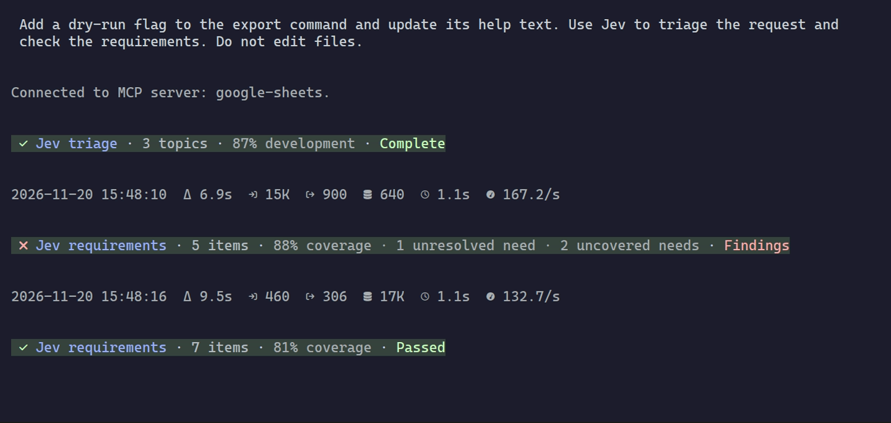
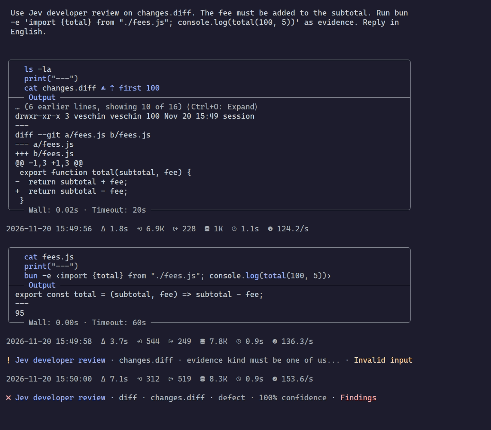

A second opinion for your coding agent
Jevstice brings Jev into oh-my-pi. Use it to check requirements, review diffs, and verify claims. Jev's verdicts are advisory.
Install Jevstice


Jev tools
Planning
jev_triagejev_requirementsjev_plan_reviewjev_reaim
During and after the work
jev_consultjev_contextjev_course_checkjev_reviewjev_acceptance
Sources and writing
jev_search_relevancejev_fact_checkjev_text_reviewjev_anti_slop